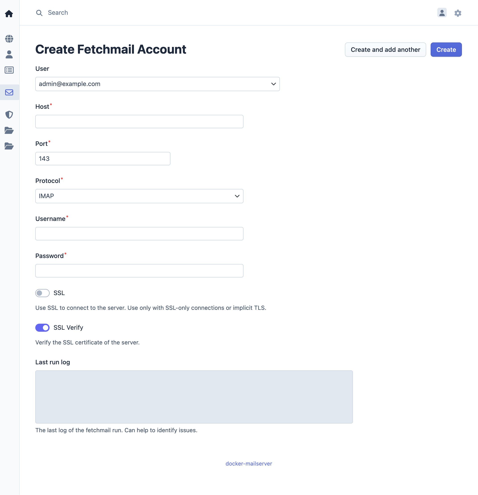

Manage Fetchmail
Fetchmail management allows users and administrators to configure external email retrieval. Fetchmail connects to external mail servers (POP3 or IMAP) and retrieves emails, delivering them to local mailboxes on the mailserver.
Overview
Fetchmail enables the mailserver to retrieve emails from external email providers and deliver them to local user accounts. This is useful for:
- Migrating emails from external providers
- Consolidating multiple email accounts into a single mailbox
- Retrieving emails from providers that don't support forwarding
- Maintaining access to emails from legacy email systems
Access Control
- Admin: Can manage fetchmail accounts for all users
- Domain Admin: Can manage fetchmail accounts for users within their assigned domain
- User: Can manage their own fetchmail accounts only
Fetchmail Operations
Adding a Fetchmail Account
- Access the management interface
- Navigate to Fetchmail in the menu bar
- Click Add Fetchmail Account
- Enter the following information:
- User: Select the local user account that will receive the retrieved emails
- Server: Hostname or IP address of the external mail server
- Port: Port number for the mail server (typically 110 for POP3, 143 for IMAP, 995 for POP3S, 993 for IMAPS)
- Protocol: Select POP3 or IMAP
- Username: Username for authenticating with the external mail server
- Password: Password for authenticating with the external mail server
- SSL: Enable secure connection (recommended)
- SSL Verify: Verify the external mail server's certificate
- Save the fetchmail account

Editing a Fetchmail Account
- Navigate to Fetchmail in the menu bar
- Select the fetchmail account to edit
- Modify configuration:
- Server: Update mail server address
- Port: Change port number
- Protocol: Switch between POP3 and IMAP
- Username/Password: Update authentication credentials
- SSL: Enable or disable secure connection
- SSL Verify: Verify the external mail server's certificate
- Save changes
You can see the last transaction log with the external mail server in the field "Last run log". This helps to troubleshoot issues with the fetchmail account.
Deleting a Fetchmail Account
- Navigate to Fetchmail in the menu bar
- Select the fetchmail account to delete
- Confirm the deletion
Note: Deleting a fetchmail account stops email retrieval but does not affect emails already delivered to the local mailbox.
Retrieval Schedule
Fetchmail runs periodically to check for new emails on external servers. The retrieval interval is configured at the mailserver level and applies to all fetchmail accounts.
Security Considerations
Authentication Credentials
Fetchmail stores authentication credentials securely. However, consider the following:
- Use strong, unique passwords for external mail server accounts
- Enable SSL to encrypt credential transmission
- Regularly review and update fetchmail account credentials
- Disable unused fetchmail accounts
Network Security
Ensure the mailserver can reach external mail servers:
- Configure firewall rules to allow outbound connections to external mail servers
- Verify DNS resolution for external mail server hostnames
- Test connectivity before configuring fetchmail accounts